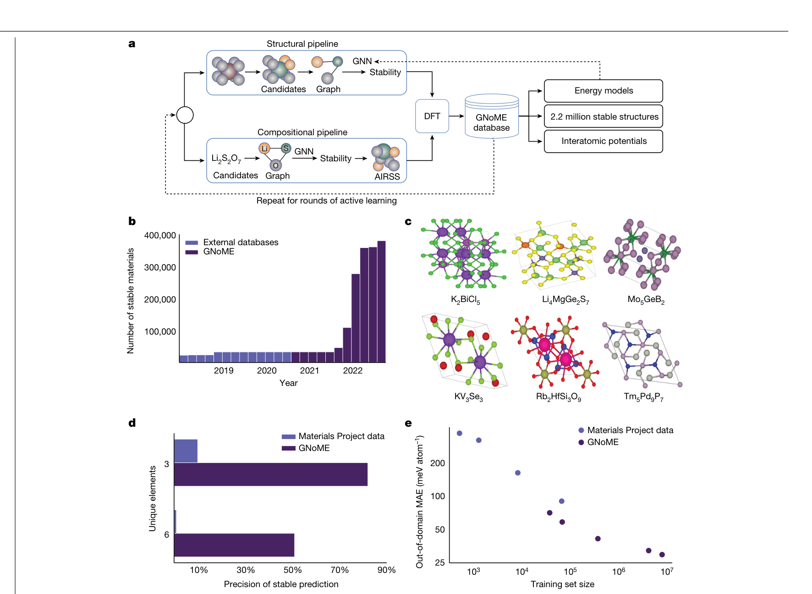
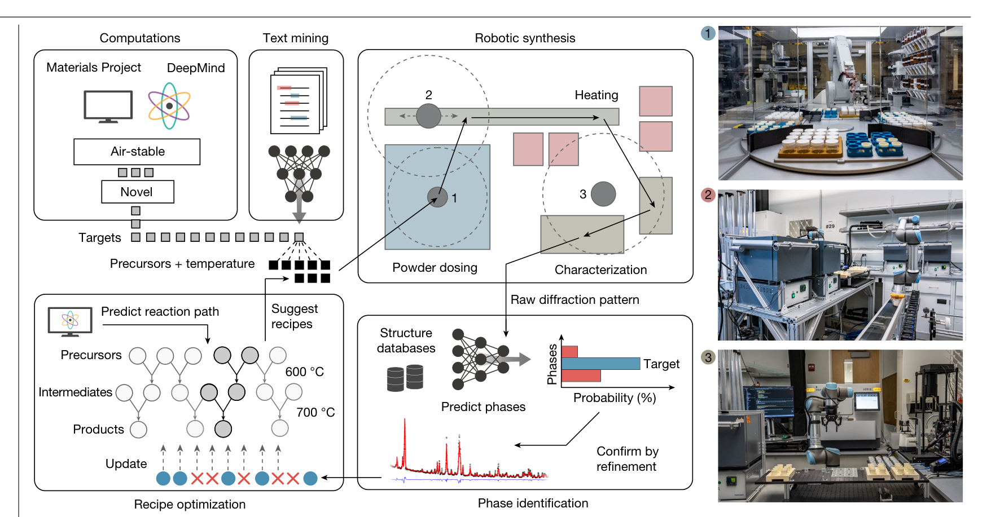
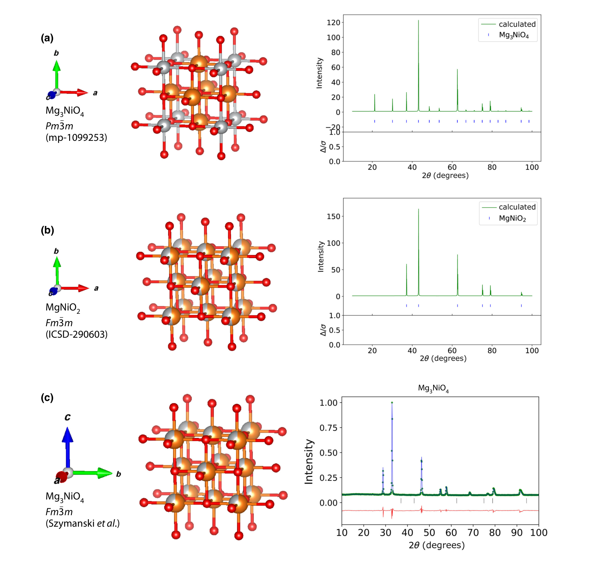

Materials Genomics
Unit 14: Constraints, Trust, and Integration Outlook
FAU Erlangen-Nürnberg


§A · Where We Are at the End of MG
01. Today’s Mission
The closing unit, in one line
- Take everything from U2–U13 and make it run as a closed-loop discovery system without lying to itself.
- Three knobs: physical constraints, distribution-shift-aware trust, experimental closure.
- One centrepiece: the autonomous-lab loop.
- Second half of today: a recap of the whole module.
Three honest gaps U2–U13 left open
- U13 candidates can violate stoichiometry / symmetry / charge — the BO loop happily proposes Na₂Cl₃. → §B constraints.
- Posteriors are calibrated in-distribution, unreliable under shift. → §D trust.
- U13 ends at “propose a candidate.” Nobody synthesises it. → §E the loop.
- PINNs (MFML W14), FAIR / model cards, and the 2026 outlook: supplementary deck on the shared drive.
02. Learning Outcomes for Unit 14
By the end of today, you can:
- Enforce physical constraints (stoichiometry, charge, symmetry, conservation) in regression heads, generative models, and acquisition functions.
- Recognise when to choose soft penalty vs hard projection vs architectural prior for a given constraint.
- Combine a surrogate’s ensemble / posterior uncertainty with an OOD score to build a trust gate and a refusal mechanism.
- Sketch an autonomous-lab loop architecture and name three failure modes for the synthesis side and three for the measurement side.
- Articulate the 2026 honest assessment: what works, what is marginal, what does not work yet.
§A2 · The Week-13 Core, Folded In
03. Uncertainty and the GP Surrogate
Aleatoric vs epistemic — and why point predictions fail
- Aleatoric: noise in the data itself. Irreducible.
- Epistemic: the model’s ignorance. Shrinks where you have data, grows where you do not — the discovery-relevant one.
- Two candidates, same predicted \(E_{\text{hull}}\), very different \(\sigma\): the low-\(\sigma\) one is a safe bet; the high-\(\sigma\) one is a breakthrough or a dud. Ranking by mean alone throws away exactly the signal discovery needs.
The GP: the small-data surrogate
- Predictive distribution at every candidate: \(\mu(\mathbf{x})\) and \(\sigma^2(\mathbf{x})\); \(\sigma\) small near training points, large far away.
- The kernel encodes “similar structures → similar properties”; it sits on your descriptor or learned latent (U11).
- Win: the small-data regime (\(n \lesssim 10^3\)–\(10^4\)) of experimental discovery. Stop: cubic scaling — at scale, hand off to deep ensembles.
Week 13 was cancelled. Its indispensable core is these three slides; the full Week-13 deck is on the shared drive as optional reference.
04. Acquisition — Turning σ into a Decision
Exploration vs exploitation
- An acquisition function \(\alpha(\mathbf{x})\) scores each candidate by how worth-it it is to evaluate next — trading the surrogate’s mean (exploit) against its variance (explore).
- EI — Expected Improvement (parameter-free default).
- UCB — \(\mu + \beta\sigma\); \(\beta\) tunes exploration directly.
- TS — Thompson Sampling; parallelises naturally.
- Pick the argmax of \(\alpha\) as the next experiment.
Rank by the right target: hull-aware BO
- Raw predicted energy is the wrong objective — stability is distance to the convex hull, \(E_{\text{hull}}\) (U4–U5).
- Acquire on expected hull improvement: rank candidates by how likely they are to be newly stable.
- This is already a constraint baked into acquisition — the feasible target set is “\(E_{\text{hull}} \le \Delta\).” §B generalises exactly this move to stoichiometry, charge, and symmetry.
05. The Active-Learning Discovery Loop
The loop, in five steps
- Surrogate predicts \(\mu, \sigma\) over candidates (GP small-\(n\); deep ensemble large-\(n\)).
- Acquisition scores them (\(\alpha\)).
- (Constrain) — feasibility filter (§B).
- Synthesise / measure the top pick.
- Update the surrogate; repeat.
This is the spine of the rest of the lecture
- §B inserts step 3.
- §D asks “can we trust step 1 outside the training data?”
- §E automates steps 4–5 — the autonomous lab.
- Deep ensembles: the at-scale stand-in for the GP, same \(\mu / \sigma\) role.
§B · Physical Constraint Enforcement
06. Why Constraints Are Not an Afterthought
The naïve generative-model failure
- Train a VAE on the Materials Project formula list.
- Sample 1000 candidates.
- Inspect: \(\sim\) 30% violate stoichiometry (non-integer ratios, violated cation / anion balance) .
- Top-\(k\) acquisition list is dominated by garbage before the surrogate even runs.
Constraints are correctness
- A surrogate that emits “Cu with 7-fold rotational symmetry” is not “noisy” — it is wrong.
- Regularisation makes a valid model better; constraints make an invalid model valid.
- Treat constraints with the same rigour as a unit-test, not as a hyperparameter.
07. Constraint Families and Enforcement Mechanisms
Four families of materials constraints
- Stoichiometry / charge balance: integer site occupancies; oxidation states sum to 0.
- Composition simplex: \(\sum_i x_i = 1\), \(x_i \geq 0\).
- Symmetry: space-group consistency, Wyckoff positions (Sandfeld et al. 2024); conservation (mass / energy) where the system is closed.
- Thermodynamic feasibility: \(E_{\text{hull}} \leq \Delta_{\text{tol}}\) (slide 04).
Three enforcement mechanisms
- Architectural prior — built into the model: softmax decoder for the simplex; E(3)-equivariant nets (NequIP, MACE) for symmetry. Guaranteed by construction.
- Soft penalty — \(\mathcal{L}_{\text{total}} = \mathcal{L}_{\text{data}} + \lambda \mathcal{L}_{\text{phys}}\). Differentiable; no guarantee.
- Hard projection / filter — \(\hat{x} = \Pi_{\mathcal{F}}(x)\). Guaranteed; non-differentiable.
- Hybrid (2026 default): soft during training, hard at inference / acquisition.
Mnemonic: composition is what the formula says; structure is what the lattice says; thermodynamics is whether nature lets it exist. — Architectural for guaranteed; soft for trainable; hard for safe.
08. Constraints in the Acquisition Function
Constrained acquisition
\[x^* = \arg\max_{x \in \mathcal{F}} \alpha(x)\]
- Filter the candidate pool \(\to \mathcal{F}\) before ranking.
- Then maximise the acquisition function \(\alpha(x)\) (EI, UCB, TS — slide 04) only on \(\mathcal{F}\).
- Filter first, rank second — order matters.
Cost-aware soft variant
- \(\tilde{\alpha}(x) = \alpha(x) - \beta \, d(x, \mathcal{F})\).
- \(d(x, \mathcal{F})\) = distance to the feasible set.
- Smooth gradients survive; near-feasible candidates can still propagate.
- Tune \(\beta\) to balance exploration and feasibility-margin tolerance.
Filter ordering matters: ranking 1000 candidates and then filtering to feasible ≠ filtering to feasible and then ranking. The two top-10 lists are different. Filter first.
09. Soft vs Hard: When to Choose Which
Soft penalty
\[\mathcal{L}_{\text{total}} = \mathcal{L}_{\text{data}} + \lambda \mathcal{L}_{\text{phys}}\]
- Differentiable; integrates with autograd.
- Trades off data fit and feasibility — no guarantee.
- Right tool during training (Neuer et al. 2024).
- \(\lambda\)-tuning is a black art; cross-validate.
Hard projection
\[\hat{x} = \Pi_{\mathcal{F}}(x)\]
- Guaranteed feasible.
- Non-differentiable on \(\partial \mathcal{F}\).
- Right tool at inference / acquisition.
- Combine: train soft, deploy hard.
§D · Trust Under Distribution Shift
10. The OOD Problem in Materials
The setup that breaks naïve trust
- Train a surrogate on Materials-Project oxides.
- Query a candidate from the nitride family.
- The GP returns a confident posterior — small \(\sigma\).
- The candidate is out-of-distribution; the small \(\sigma\) is meaningless.
The two operational OOD signals
- Latent-space distance: how far is the candidate from the U11 / U12 latent manifold of the training set?
- Feature-space Mahalanobis distance, deep-ensemble disagreement, density estimation in latent space.
- Did our latent space cover this candidate? — the right question to ask before trusting the posterior (Bishop 2006).
The sim→exp gap is itself a shift: a surrogate trained on DFT does not predict bench measurements — functional bias, geometry mismatch, and “stability” meaning different things. The “MAE 30 meV/atom on Materials Project” headline is not the error you see at the bench.
11. Calibration — Per Family, and Without a Guarantee
Calibration drift
- Surrogate calibrated on chemistry family A: nominal 90% intervals cover 88% — fine.
- Apply to family B without re-calibration: coverage drops to 70%. Over-confident; decisions made on it are wrong.
- Why: the aleatoric / epistemic split — and the intrinsic noise — is family-specific.
What σ gives you — and what it does not
- Working epistemic signal: GP posterior or deep-ensemble disagreement \(\sigma_{\text{ens}}(x) = \mathrm{std}_k\,\hat{f}_k(x)\).
- Calibrate per family: reliability diagram (ML-PC W8), then temperature / isotonic adjustment.
- No finite-sample, distribution-free guarantee: under shift the interval silently loses coverage. \(\sigma\) alone is not a trust decision — pair it with an OOD score (next slide).
Operational rule: re-calibrate the surrogate on every newly-entered chemistry family, before using its uncertainty for screening.
12. The Trust Gate — σ Plus an OOD Score
The gate
- Acquisition (slide 04) picks the highest-\(\alpha\) candidate; the gate adds: commit synthesis only if \(\sigma(x)\) is small and the OOD score is low.
- Three usable OOD scores: latent-space NN distance \(\min_i \|\phi(x) - \phi(x_i)\|\); Mahalanobis \(\sqrt{(x-\mu)^\top \Sigma^{-1} (x-\mu)}\); ensemble disagreement.
- Combine: two of three exceeding is a stronger refusal than one (Goodfellow et al. 2016). Refusals → human review or a cheap exploratory measurement.
The trap the gate must catch: silent extrapolation
- Surrogate emits low variance on a novel chemistry — the kernel cannot see the family difference; ensemble members all saw the same data.
- All surrogate-derived trust signals say “go.” All are wrong.
- Mitigation: an OOD score not derived from the surrogate; conservative refusal (low \(\sigma\) + high OOD = refuse); periodic blind audits of confidently-endorsed candidates.
The lesson: trust is a system property, not a model property. Combine signals.
13. Trust Budget — The Operational Summary
The audit trail per decision
- Surrogate: model, training set, version.
- Calibration: calibration set, target level, per-family reliability adjustment.
- OOD score: which score(s), threshold, value.
- Feasibility filter: which constraints were checked.
- Decision: rank, candidate, refusal flag, human-review status.
Why the trail matters
- A six-month campaign generates 50–200 synthesis decisions; the log is the basis for every post-mortem — and loops always fail somehow.
- It is what reviewers, funders, and the next student will ask for. Without it, “we ran an autonomous lab” is unverifiable.
- Summarised once per loop run as a model card (format: supplementary deck).
§E · The Autonomous-Lab Loop
14. The Closing-the-Loop Ambition
Discovery is a decision problem, not a prediction problem
- A surrogate that predicts \(E_{\text{hull}}\) for 200 candidates is not discovery.
- Discovery = one of those 200 ended up in a vial, and we know which one and what it became.
- The loop is what turns proposals into measured outcomes.
Six steps, repeated
- Predict (U8–U10 surrogate, §A2).
- Propose (acquisition + §B feasibility + §D refusal).
- Schedule (workflow engine, instrument time).
- Run (synthesis robot).
- Measure (characterisation pipeline).
- Update (parser, database, surrogate retrain).
15. The Proposal Side at Scale — GNoME

Prediction is now cheap — and good
- GNoME (Merchant et al. 2023): GNN surrogates filter candidates, DFT verifies, results retrain the model — six rounds of active learning.
- 2.2 million predicted-stable crystals; 381,000 new convex-hull entries — an order-of-magnitude expansion; hit rates > 80% with structure.
- 736 of them independently made by labs worldwide — the rest are proposals.
- Step 1–2 of the loop is essentially solved at scale. Steps 3–6 — making and measuring — are the bottleneck. That is where the next slides live.
16. Loop Architecture and Orchestration
Components — and the painful interfaces
- Surrogate stack + proposal layer (§A2 acquisition + §B feasibility + §D gate).
- Scheduler ↔︎ hardware: instrument SDK, vendor API, SiLA-2 / OPC-UA for cross-platform.
- Execution (synthesis hardware) and measurement (XRD, mass-spec, electrochem).
- Feedback: parser → database → retrain trigger; parsers must be schema-versioned.
- Each interface is a real engineering effort.
Use off-the-shelf glue
- Workflow engines: AiiDA (materials-native, provenance), FireWorks, Prefect / Airflow, Argo. Pick one, do not roll your own.
- BO drivers: BoTorch (modern, multi-fidelity), Ax, Dragonfly, GPyOpt. Pick one, plug it in.
The 80/20 rule for autonomous labs: 80% of the work is orchestration; 20% is the surrogate. The community has good tools for both halves now — use them.
17. A-Lab — the Landmark (2023)

- Berkeley’s autonomous lab for inorganic powder synthesis (Szymanski et al. 2023): all six loop steps automated end-to-end — the reported campaign: 36 of 57 novel targets claimed synthesised in 17 days of continuous closed-loop operation.
18. The A-Lab Debate, Honestly
The follow-up critique (Leeman et al. 2024)
- Independent re-analysis of all claimed successes: none were demonstrably new materials.
- 24/36: predicted cation-ordered structures with no evidence for the ordering — the known compound is the same lattice with disordered cations.
- 8/36: refined against a disordered variant that already exists in the ICSD; 18/36: very poor Rietveld fits; 3/36: already reported.
- Lesson 1: autonomous synthesis works; autonomous novelty verification does not yet.
- Lesson 2: workflow result and science result need separate evaluation.
- Lesson 3: human structural review is still required for novelty claims in mid-2026 — and the field updated honestly. That is health.

19. Failure Modes — Synthesis and Measurement
Synthesis side
- Recipe ambiguity: “600 °C for 12 h” — what ramp rate, crucible, atmosphere? A recipe is a full procedural object, or two platforms make two different products.
- Hardware bottleneck: weighing, mixing, thermal cycles dominate cycle time — not the surrogate.
- Sample-handling errors: dropped vials, contaminated crucibles — invisible to the model, fatal to the data. Instrument the hardware; route per-step success flags to the database.
Measurement side
- Automated phase ID returns “best match” with no warning on ambiguous patterns (slide 18); instrument calibration drifts over weeks.
- The operator-time bottleneck: 100–500 spectra / day for human review is not autonomous — it is a person staring at a screen.
- Mitigation: triage by uncertainty — auto-accept above \(\tau_{\text{high}}\), auto-reject below \(\tau_{\text{low}}\), human review between.
“An autonomous lab is a lab that fails automatically. Engineering it well means catching the failures automatically too.”
20. What Works, What Does Not — Mid-2026
Works (productive use)
- Workflow orchestration on a single platform.
- BO over single composition axes with one fast measurement endpoint.
- Synthesis-then-XRD on inorganic powders with curated phase library.
- Photochemistry with HPLC readout.
- Closed-loop within a curated chemistry family.
Marginal / does not yet work
- Multi-step synthesis with on-line correction.
- Multi-property optimisation under conflicting objectives.
- Cross-platform recipe portability.
- Open-ended novelty discovery without curated candidate pools.
- Self-debugging instruments; cross-domain transfer (catalysis ↔︎ batteries).
The honest 2026 verdict: autonomous labs are real research infrastructure, within their domain. They are not yet a general-purpose discovery engine. The minimum viable build — one platform you control end-to-end, one trusted measurement endpoint, a constrained calibrated surrogate, an off-the-shelf workflow engine, an audit trail — buys 3–5× throughput and runs nights and weekends.
§R · Module Recap — The Whole of MG in Thirty Minutes
21. The MG Syllabus Arc in One Slide
The arc, walked once more
- Physics (U2–U4): QM postulates, electronic structure, thermo, atomistic simulation.
- Representations (U6–U7): graphs, local atomic environments, descriptors.
- Models (U8–U10): regression, neural networks, learned representations.
- Geometry (U11–U12): latent spaces, clustering, discovery vs labelling.
The arc’s destination
- Decision (U13–U14): UQ, BO, constraints, trust, autonomous loops.
- Each unit served the next.
- This unit served all of them.
- The integration story is the test of whether the rest taught anything operational.
22. U1–U2 · Quantum Mechanics: Postulates and Atoms
The core
- Classical physics broke on blackbody radiation, the photoelectric / Compton effects, and atomic spectra → energy is quantised.
- The postulates: states are wavefunctions; observables are Hermitian operators; spectral decomposition; measurement collapse; Schrödinger time evolution.
- Spin and Pauli exclusion; the variational principle — any trial wavefunction bounds the ground-state energy from above.
Why it mattered downstream
- The Hamiltonian is the object every later method approximates (U3).
- The variational principle is the engine of HF and DFT — and the ancestor of every “minimise a loss” you have run since.
- Exam angle: state a postulate precisely; apply the variational bound to a trial wavefunction.
23. U3 · Quantum Chemistry Methods (HF → DFT)
The core
- The many-electron problem is unsolvable exactly → basis sets (STOs vs GTOs; GTOs won on integral speed, fixed by contraction).
- Hartree-Fock: mean field + Slater determinant → exchange exactly, correlation missing.
- Post-HF (MP, CC) buys correlation at steep cost; DFT trades the wavefunction for the density — the workhorse.
Why it mattered downstream
- DFT is where our labels come from: formation energies, band gaps — with functional bias (PBE vs SCAN) that became §D’s sim–exp gap.
- The cost ladder (DFT hours, CC days) is why surrogates exist at all — and why slide 15’s “1000× cheaper” MLIPs changed the economics.
- Exam angle: why GTOs won; what HF misses; place DFT on the accuracy-vs-cost ladder.
24. U4–U5 · Thermodynamics, Statistical Mechanics, MD & MC
The core
- Free energies decide phases — which potential when (\(U, H, F, G\)); entropy and the laws.
- The partition function links micro to macro; Maxwell-Boltzmann.
- Simulation: MD integrates forces in time; Metropolis MC samples the Boltzmann distribution — detailed balance is the correctness condition.
Why it mattered downstream
- The convex hull and \(E_{\text{hull}}\) are thermodynamics — today’s acquisition target (slide 04) and A-Lab’s screening criterion.
- MD needs forces → why equivariant MLIPs (U6, U9) are non-negotiable.
- MC’s importance-sampling logic returns as Thompson sampling and BO exploration.
- Exam angle: justify the Metropolis acceptance rule; pick the right free energy for fixed \(T, p\).
25. U6 · Descriptors and Local Atomic Environments
The core
- The descriptor ladder: composition-only (Magpie / matminer) → structure-aggregated (RDF, Voronoi coordination) → local atomic environments under a radial cutoff.
- Invariance discipline: translation, rotation, permutation, PBC — raw Cartesians are the wrong baseline.
- Local environments are the input object of universal MLIPs.
Why it mattered downstream
- Where composition-only fails = polymorphs (same formula, different structure, different property).
- §B’s architectural priors are this invariance discipline turned into network design.
- Exam angle: pick a descriptor tier for a given task and dataset size, and justify; name the four invariances.
26. U7 · Crystals as Graphs
The core
- A crystal is a periodic graph: atoms as nodes, edges under a radial cutoff, PBC-aware neighbour lists (periodic images are not optional).
- Geometry becomes features via Gaussian RBF distance encoding.
- Message passing is the template every materials GNN instantiates.
Why it mattered downstream
- Invariance vs equivariance: scalar targets may be invariant; forces must be equivariant — non-negotiable.
- This representation is what the whole model stack sits on: U9’s SchNet/CGCNN, U10’s pretraining, GNoME (slide 15).
- Exam angle: sketch the graph-construction workflow; explain why equivariance is required for forces but not for energies.
27. U8 · Regression and Generalization
The core
- Bias-variance and regularisation-as-prior (MFML W7), applied to materials descriptors.
- The “what kind of new is your test set?” taxonomy: chemistry-family leakage, polymorph aliasing, database shift, stability bias, prototype dominance.
- Split design is the experiment design: random vs group-aware vs LOCO (leave-one-chemistry-out) vs time splits.
Why it mattered downstream
- A random-split MAE headline overstates discovery performance; LOCO is the operational number — it belongs on the model card.
- U8 is why §D exists: distribution shift was already visible in the split protocol before we gave it a name.
- Exam angle: given a discovery campaign, choose and defend a split protocol; diagnose a leakage story.
28. U9 · Neural Networks for Materials Properties
The core
- The MLP-on-Magpie failure: generic architectures waste capacity learning symmetries from data.
- SchNet: continuous-filter convolutions on interatomic distances. CGCNN: message passing on crystal graphs.
- Equivariant networks (NequIP, MACE): E(3) symmetry by construction → data efficiency and physical correctness.
Why it mattered downstream
- These are the step-1 surrogates of today’s loop and the backbone of foundation MLIPs — GNoME’s GNN (slide 15) is this unit at industrial scale.
- §B’s “architectural prior is the gold standard” was born here.
- Exam angle: SchNet vs CGCNN vs equivariant nets — which for molecular energies, which for crystals, which for forces, and why.
29. U10–U11 · Representation Learning and Latent Spaces
The core
- Self-supervised pretraining on unlabelled crystal databases: atom masking, edge masking, denoising, contrastive pairs.
- Pretrained GNNs as featurizers; foundation embeddings (M3GNet, MACE).
- Latent maps of the Materials Project: colour by formation energy / band gap / \(E_{\text{hull}}\); clusters = chemistry families; the UMAP-is-not-truth pitfall.
Why it mattered downstream
- The latent space is where §D’s OOD distance is measured — “did our latent cover this candidate?” is a U10/U11 question.
- Phase discovery without labels = clustering the latent (U11).
- Exam angle: design a pretext task for a given data situation; read a property map critically (what UMAP distances do and do not mean).
30. U12 · Generative Models and Inverse Design
The core
- Forward vs inverse: from “predict the property of a structure” to “generate a structure with a property.”
- Diffusion on crystals: CDVAE, DiffCSP(++), MatterGen — lattice + coordinates + species, symmetry-aware variants, conditioning + DFT validation.
- Evaluation: S.U.N. — stable, unique, novel.
Why it mattered downstream
- Generative proposals are exactly what §B must constrain (Na₂Cl₃!) and §D must gate.
- The Leeman critique (slide 18) is an evaluation failure of the same kind S.U.N. tries to prevent — “novel” claimed without checking the disordered known parent.
- Exam angle: name how one named model handles symmetry / stoichiometry; critique a novelty claim with the S.U.N. vocabulary.
31. U13 → §A2 · Uncertainty-Aware Discovery
The core (taught this morning as §A2)
- Databases and the convex hull as discovery targets; \(E_{\text{hull}}\) as the discoverability signal.
- \(\sigma\) over point predictions; the GP surrogate; EI / UCB / TS; hull-aware acquisition; the active-learning loop.
Why it mattered downstream
- The loop pentagon (slide 05) is the spine of §B, §D, §E — every section plugged into one of its edges.
- The full cancelled Week-13 deck remains optional reference on the shared drive.
- Exam angle: two candidates, same mean, different \(\sigma\) — what does each acquisition function do, and what does a trust gate add?
32. U14 · Today, in One Slide
The three knobs
- §B constraints: four families × three mechanisms; filter first, rank second; train soft, deploy hard.
- §D trust: per-family calibration + OOD score + audit trail; beware silent extrapolation.
- §E the loop: six steps; GNoME at the proposal end, A-Lab at the execution end, the debate in between; honest 2026 verdict.
The five must-know statements
- Constraints are correctness, not regularisation.
- Soft penalties in the loss; hard projections at acquisition; architectural priors are the gold standard.
- Uncertainty is not coverage — calibrated only in-distribution; under shift, OOD detection + ensembles + audit trail.
- Six loop steps; failure at any of them; audit the trail.
- The bottleneck is synthesis and measurement, not the surrogate.
33. Rapid Self-Test — One Question per Unit
- U2: Which postulate tells you the state after a measurement?
- U3: Why did GTOs beat STOs despite the wrong cusp behaviour?
- U4: Which free energy governs fixed \(T, p\) — and why is it the hull’s currency?
- U5: What condition guarantees Metropolis samples the Boltzmann distribution?
- U6: Name the four invariances a descriptor must respect.
- U7: Why must force predictions be equivariant rather than invariant?
- U8: Random-split MAE 25, LOCO 90 meV/atom — which do you report, and to whom?
- U9: New ternary-oxide energy model: SchNet, CGCNN, or MACE — why?
- U10–U11: Which §D OOD score lives in the latent space?
- U12–U14: What does S.U.N. stand for — and which letter did the A-Lab critics attack?
§H · Course Wrap
34. The Four Big Skills
Choose and Train
- Choose a representation with the right invariances for the property (U6–U7, U10, §B).
- Train a surrogate with calibrated uncertainty and a defensible split protocol (U8, §A2, §D).
Plan and Close
- Plan an acquisition that respects feasibility, OOD coverage, and budget (§A2, §B, §D).
- Close the loop with reviewable artefacts (audit trail, model card, run log) (§D, §E).
If you can do all four end-to-end on a chemistry domain you care about, you are an MG practitioner. That is what this course taught.
35. Exam, Questions, and End of MG
Exam scope
- The four big skills (slide 34), each via one operational scenario.
- Worked examples drawn from U8, U10, §A2, U14.
- Vocabulary: representation, invariance, kernel, posterior, calibration, OOD, feasibility, audit trail.
- Algorithms: the pseudocode side deck lists all sixteen you must be able to write and trace.
The exam rubric
- Bring to every answer: a feasibility filter, an OOD / calibration check, a defensible split (LOCO or time), a named failure mode, a mitigation.
- That is the rubric. State the constraint. State the trust signal. State the failure mode. State the mitigation.
- Thank you. Questions.
Continue

© Philipp Pelz - Materials Genomics